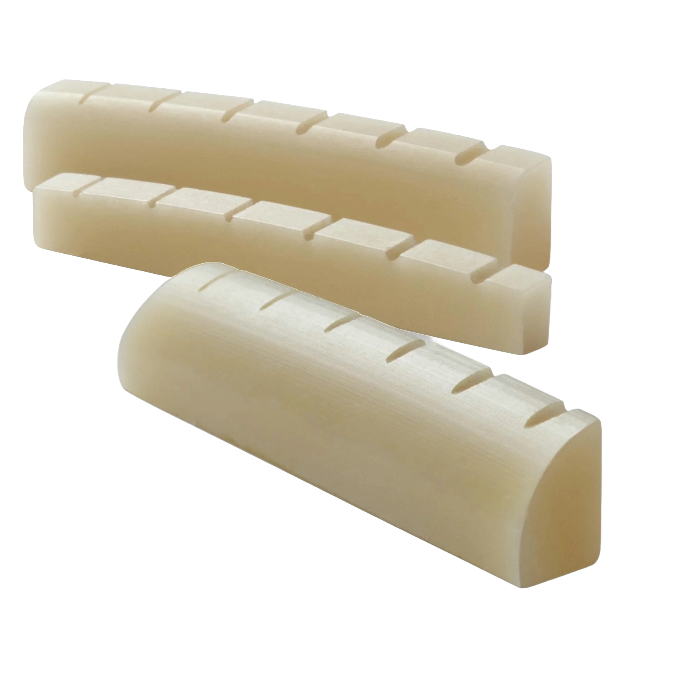
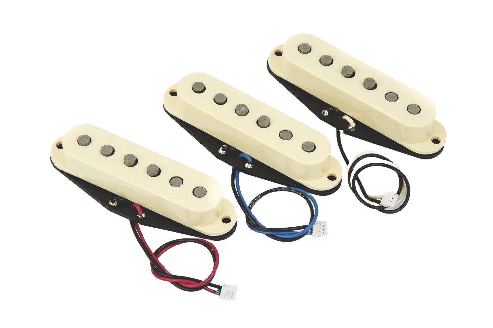

Headstock
 Headstock: The headstock is at the very top of the guitar. It holds the tuning pegs, which you turn to tighten or loosen the strings and keep the guitar in tune. A well-made headstock helps your guitar stay in tune longer and makes tuning easier.
Headstock: The headstock is at the very top of the guitar. It holds the tuning pegs, which you turn to tighten or loosen the strings and keep the guitar in tune. A well-made headstock helps your guitar stay in tune longer and makes tuning easier.Nut
Nut: The nut is a small strip located between the headstock and the fretboard. It has small slots that hold each string in place and guide them toward the tuners. The nut helps with string spacing, tuning stability, and how high the strings sit over the first fret. A good nut makes the guitar feel smoother to play and helps prevent buzzing or tuning problems.Neck & Fretboard
Neck & Fretboard: The neck and fretboard are the long part of the guitar that sticks out from the body. The fretboard is the front side where the metal frets are, and that’s where you press the strings to play notes and chords. The shape and feel of the neck affect how easy the guitar is to play, and the fretboard also influences the tone.Body
Body: The body is the big part of the guitar that rests against your body. On electric guitars, it holds the pickups and electronics. The size, shape, and type of wood all affect how the guitar sounds and feels. Some bodies are solid, while others are hollow or partly hollow, which changes the tone.Bridge
Bridge: The bridge is the part on the body where the strings are attached at the bottom. It helps control the string’s height and keeps them in tune. Some bridges stay still, while others let you use a whammy bar to bend notes. A good bridge helps your guitar sound clean and stay in tune.Pickups
Pickups: Are small magnetic parts under the strings that "pick up" the sound of the strings when you play. They turn the string’s vibration into an electric signal that goes to the amp, which is how a guitar gets its sound. Different pickups create different tones, some sound sharp and clear, while others sound heavier or smoother.